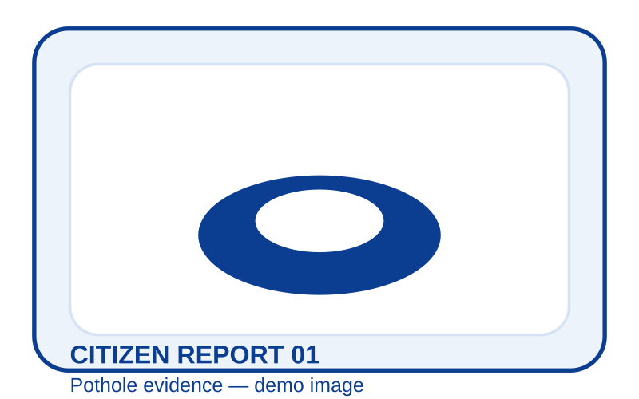

1 PHOTO ✓
2 LOCATION ✓
3 CONFIRM
CHECK YOUR REPORT
Please review your report details before submitting.

Problem
Pothole
Severity
High
Detected Problem Components
Location
Prathamesh Nagar, Salokhe Nagar, Kalamba, Kolhapur
Kolhapur Municipal Corporation · Ward: 20 · Division: Pending official mapping
Coordinates: 16.691307, 74.244866 · Accuracy: ±12 m
Assigned Department
City Engineer / PWD
Automatically assigned via municipal routing rules
Municipal Routing
2 Departments Involved
Primary Department
Water Supply & Drainage
Water / Drainage Field Team (Lead Agency)
Supporting Department(s)
City Engineer / PWD
Secondary Restoration Team
CivicFix coordinates multiple municipal departments under one Master Incident.
Master Incident
Pending
A new Master Incident will be created for this physical civic problem.
1
New physical civic incident
AI CivicFix — Hackathon Prototype